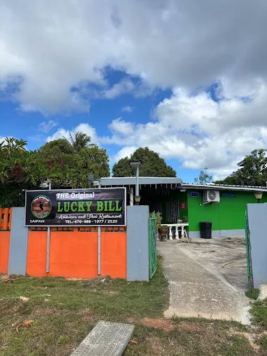

The Original Lucky Bill | Garapan, Saipan
The Original Lucky Bill has American and Thai cuisines. What I liked about the restaurant is how friendly they were and how cozy the place was that it felt like home. I liked their side dishes, specifically somtam which is a papaya salad where you can adjust the spice level (Thai are known for how spicy their foods are), I also liked their fried rice and other authentic thai dishes.
What I love:
- Their Friendly services
- Their Delicious Side Dishes
- Their Cozy Atmosphere